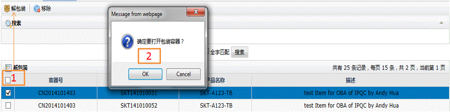
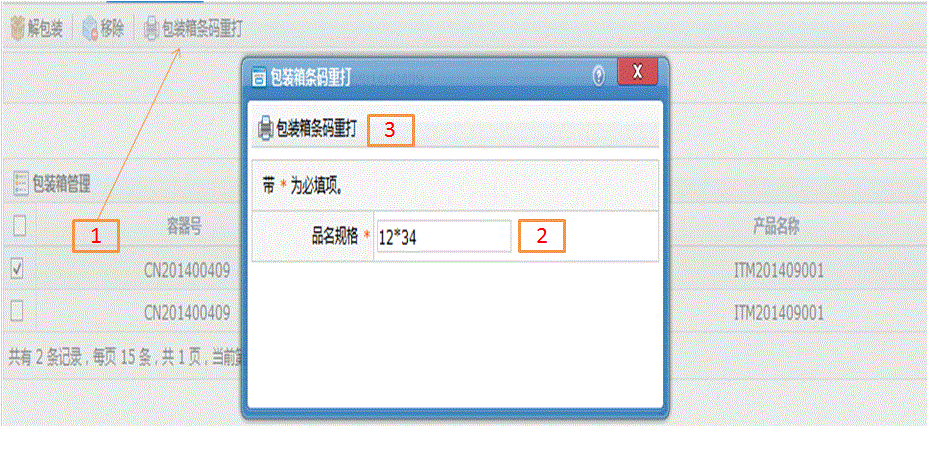

功能描述
查询容器信息，可对容器中的序列号移除操作
搜索
1.输入序列号；
2.点击搜索按钮后列表显示结果。
2.点击搜索按钮后列表显示结果。

解包装
1.选中查询出的任意一条记录后单击左上角解包装按钮；
2.弹出窗口中选择Ok包装箱状态打开，选择Cancel取消操作。
2.弹出窗口中选择Ok包装箱状态打开，选择Cancel取消操作。

移除
1.选中查询出的相关记录后单击左上角移除按钮；
2.弹出窗口中选择Ok将把该产品从包装箱中移除，选择Cancel取消操作。
2.弹出窗口中选择Ok将把该产品从包装箱中移除，选择Cancel取消操作。

包装箱条码重打
1.选中查询出的相关记录后单击左上角包装箱条码重打按钮；
2.弹出窗口中输入品名规格；
3.单击包装箱条码重打按钮即可。
2.弹出窗口中输入品名规格；
3.单击包装箱条码重打按钮即可。
